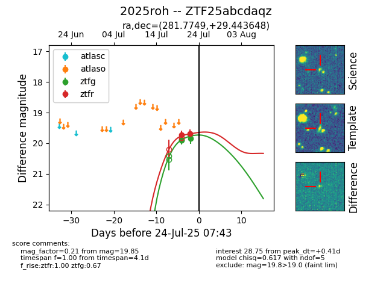

Target ZTF25abcdaqz at 2025-07-24 07:43, see:
FINK: fink-portal.org/ZTF25abcdaqz
Lasair: lasair-ztf.lsst.ac.uk/objects/ZTF25abcdaqz
ALeRCE: alerce.online/object/ZTF25abcdaqz
TNS: wis-tns.org/object/2025roh
YSE: ziggy.ucolick.org/yse/transient_detail/2025roh
alt names
ZTF25abcdaqz (ztf,fink)
2025roh (tns,yse)
coordinates:
equatorial (ra, dec) = (281.7749,+29.44365)
galactic (l, b) = (59.2136,+13.81670)
photometry
last ztfg=19.85, ztfr=19.69
4 ztfg, 2 ztfr detections
